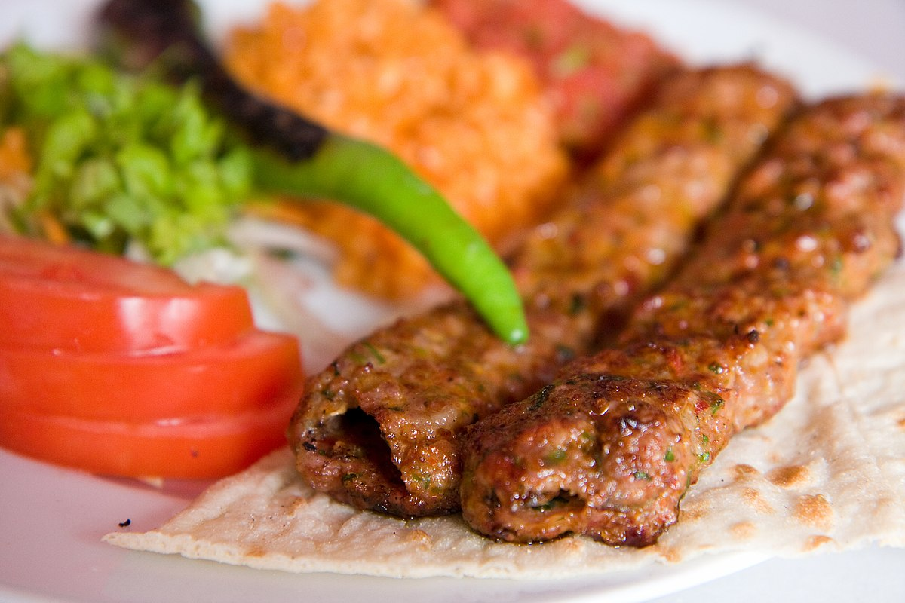

Kebap

Kebab is roasted meat that originates from Turkey. Many variants of kebab are popular around the world, including the skewered shish kebab and the doner kebab with bread.
Ingredients
- 500 gr lamb meat from leg of lamb cube cut
- 100 gr tail fat cube cut
- 2 red carmen pepper mezzaluna cut
- 3 tbsp red hot chili pepper flakes
- 1 teaspoon salt
Steps
- Combine lamb meat cubes and tail fat cubes by using mezzaluna knife.
It will take 30 minutes to combine lamb meat and tail fat well together.
- Once the lamb meat cubes and tail fat cubes are combined well by using mezzaluna knife, they will look like ground meat.
- Combine mezzaluna cut red carmen pepper, red hot chili pepper flakes and salt with the mix and use mezzaluna knife again to combine all them well.
It will take additional 10 minutes to combine all the mix well.
- Put the kebab meat on to the skewers.
(You can use water to prevent the kebab meat to stick on your hand while putting the meat on to the skewers.)
- Put the skewers on a charcoal grill and cook around 15-20 minutes.
While grilling, don’t forget to flip the each side of the Kebab continuously to keep the tail fat’s and ingredients’ juice in the meat.